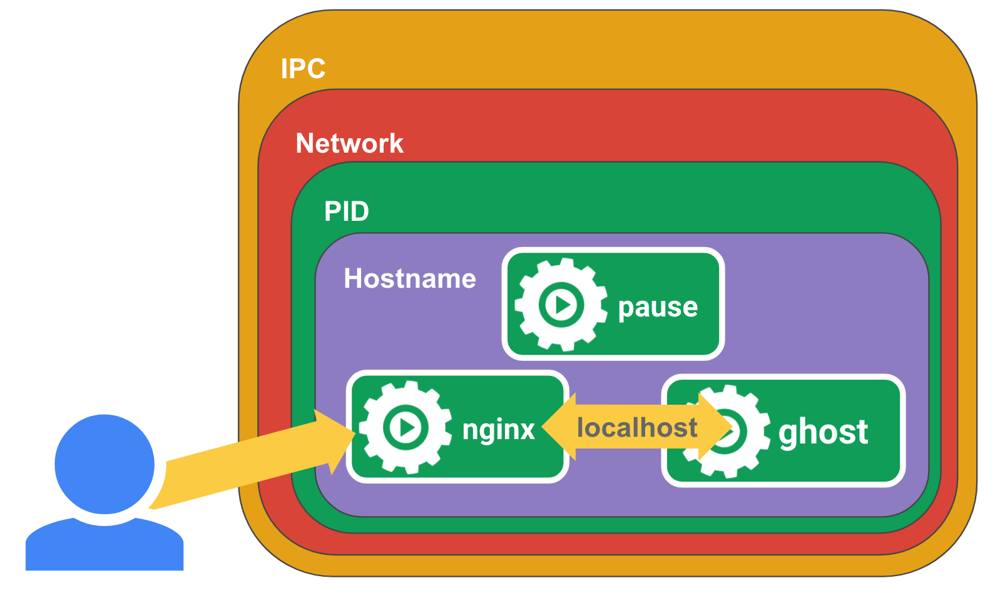

Pause 容器
openshift中kubelet的配置中有这样一个参数：
KUBELET_POD_INFRA_CONTAINER=--pod-infra-container-image=registry.access.redhat.com/rhel7/pod-infrastructure:latest
kubernetes中默认的配置参数是：
KUBELET_POD_INFRA_CONTAINER=--pod-infra-container-image=gcr.io/google_containers/pause-amd64:3.0
Pause容器，可以自己来定义，官方使用的gcr.io/google_containers/pause-amd64:3.0容器的代码见 Github，使用C语言编写
特点
- 镜像非常小，目前在700KB左右
- 永远处于Pause(暂停)状态
背景
像 Pod 这样一个东西，本身是一个逻辑概念。那在机器上，它究竟是怎么实现的呢？ 这就是我们要解释的一个问题
既然说 Pod 要解决这个问题，核心就在于如何让一个 Pod 里的多个容器之间最高效的共享某些资源和数据
因为容器之间原本是被 Linux Namespace 和 cgroups 隔开的，所以现在实际要解决的是怎么去打破这个隔离，然后共享某些事情和某些信息 这就是 Pod 的设计要解决的核心问题所在
所以说具体的解法分为两个部分： 网络 和 存储
Pause容器就是为解决Pod中的网络问题而生的
实现
Pod 里的多个容器怎么去共享网络？下面是个例子：
比如说现在有一个 Pod，其中包含了一个容器 A 和一个容器 B，它们两个就要共享 Network Namespace 在 Kubernetes 里的解法是这样的：它会在每个 Pod 里，额外起一个 Infra container 小容器来共享整个 Pod 的 Network Namespace Infra container 是一个非常小的镜像，大概 700KB 左右，是一个C语言写的、永远处于“暂停”状态的容器。由于有了这样一个 Infra container 之后，其他所有容器都会通过 Join Namespace 的方式加入到 Infra container 的 Network Namespace 中 所以说一个 Pod 里面的所有容器，它们看到的网络视图是完全一样的。即：它们看到的网络设备、IP地址、Mac地址等等，跟网络相关的信息，其实全是一份，这一份都来自于 Pod 第一次创建的这个 Infra container。这就是 Pod 解决网络共享的一个解法 在 Pod 里面，一定有一个 IP 地址，是这个 Pod 的 Network Namespace 对应的地址，也是这个 Infra container 的 IP 地址。所以大家看到的都是一份，而其他所有网络资源，都是一个 Pod 一份，并且被 Pod 中的所有容器共享。这就是 Pod 的网络实现方式
由于需要有一个相当于说中间的容器存在，所以整个 Pod 里面，必然是 Infra container 第一个启动。并且整个 Pod 的生命周期是等同于 Infra container 的生命周期的，与容器 A 和 B 是无关的
这也是为什么在 Kubernetes 里面，它是允许去单独更新 Pod 里的某一个镜像的 做这个操作，整个 Pod 不会重建，也不会重启，这是非常重要的一个设计
作用
检查node节点的时候会发现每个node上都运行了很多的pause容器:
$ docker ps CONTAINER ID IMAGE COMMAND CREATED STATUS PORTS NAMES 2c7d50f1a7be docker.io/jimmysong/heapster-grafana-amd64@sha256:d663759b3de86cf62e64a43b021f133c383e8f7b0dc2bdd78115bc95db371c9a "/run.sh" 3 hours ago Up 3 hours k8s_grafana_monitoring-influxdb-grafana-v4-5697c6b59-76zqs_kube-system_5788a3c5-29c0-11e8-9e88-525400005732_0 5df93dea877a docker.io/jimmysong/heapster-influxdb-amd64@sha256:a217008b68cb49e8f038c4eeb6029261f02adca81d8eae8c5c01d030361274b8 "influxd --config ..." 3 hours ago Up 3 hours k8s_influxdb_monitoring-influxdb-grafana-v4-5697c6b59-76zqs_kube-system_5788a3c5-29c0-11e8-9e88-525400005732_0 9cec6c0ef583 jimmysong/pause-amd64:3.0 "/pause" 3 hours ago Up 3 hours k8s_POD_monitoring-influxdb-grafana-v4-5697c6b59-76zqs_kube-system_5788a3c5-29c0-11e8-9e88-525400005732_0 54d06e30a4c7 docker.io/jimmysong/kubernetes-dashboard-amd64@sha256:668710d034c4209f8fa9a342db6d8be72b6cb5f1f3f696cee2379b8512330be4 "/dashboard --inse..." 3 hours ago Up 3 hours k8s_kubernetes-dashboard_kubernetes-dashboard-65486f5fdf-lshl7_kube-system_27c414a1-29c0-11e8-9e88-525400005732_0 5a5ef33b0d58 jimmysong/pause-amd64:3.0
kubernetes中的pause容器主要为每个业务容器提供以下功能：
- 在pod中担任 Linux命名空间 共享 的基础
- 启用 pid命名空间 ，开启 init进程
实例

首先在节点上运行一个pause容器
docker run -d --name pause -p 8880:80 jimmysong/pause-amd64:3.0
然后再运行一个nginx容器，nginx将为localhost:2368创建一个代理
$ cat <<EOF >> nginx.conff error_log stderr; events { worker_connections 1024; } http { access_log /dev/stdout combined; server { listen 80 default_server; server_name example.com www.example.com; location / { proxy_pass http://127.0.0.1:2368; } } } EOF $ docker run -d --name nginx -v `pwd`/nginx.conf:/etc/nginx/nginx.conf --net=container:pause --ipc=container:pause --pid=container:pause nginx
然后再为ghost创建一个应用容器，这是一款博客软件
$ docker run -d --name ghost --net=container:pause --ipc=container:pause --pid=container:pause ghost
现在访问 http://localhost:8880/ 就可以看到ghost博客的界面
解析
- pause容器将内部的80端口映射到宿主机的8880端口
- pause容器在宿主机上设置好了网络namespace后
- nginx容器加入到该网络namespace中
- nginx容器启动的时候指定了–net=container:pause
- ghost容器同样加入到了该网络namespace中，这样三个容器就共享了网络，互相之间就可以使用localhost直接通信
- –ipc=contianer:pause –pid=container:pause就是三个容器处于同一个namespace中
init进程为pause，这时进入到ghost容器中查看进程情况
# ps aux USER PID %CPU %MEM VSZ RSS TTY STAT START TIME COMMAND root 1 0.0 0.0 1024 4 ? Ss 13:49 0:00 /pause root 5 0.0 0.1 32432 5736 ? Ss 13:51 0:00 nginx: master p systemd+ 9 0.0 0.0 32980 3304 ? S 13:51 0:00 nginx: worker p node 10 0.3 2.0 1254200 83788 ? Ssl 13:53 0:03 node current/in root 79 0.1 0.0 4336 812 pts/0 Ss 14:09 0:00 sh root 87 0.0 0.0 17500 2080 pts/0 R+ 14:10 0:00 ps aux
在ghost容器中同时可以看到pause和nginx容器的进程，并且pause容器的PID是1
在kubernetes中容器的PID=1的进程即为容器本身的业务进程